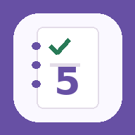

ТЕКУЩИЙ РЕЗУЛЬТАТ
—Добавьте предметы

Учебный трекер
Добавляйте предметы, а затем оценки по датам
Добавьте первый предмет, затем заполните оценки по учебным датам.
Сравнение текущих результатов с вашими целями
Динамика по оценкам за выбранный период
Сравнение предметов за выбранный период
Распределение оценок и среднее по каждому предмету
Оценки, необходимые для достижения цели по предмету
Личная страница предмета
Подсказки на основе ваших оценок
Изменение среднего по мере добавления оценок
Дата, период и комментарии